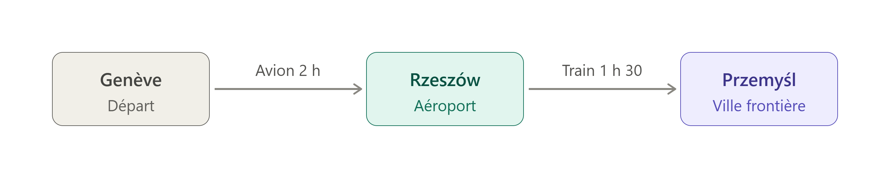
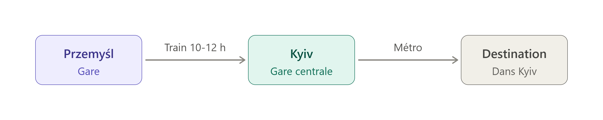

Première partie du voyage
- Prendre l'avion depuis Genève jusqu'à Rzeszów (2h)
- Prendre le train jusqu'à Przemyśl depuis Rzeszów la ville frontière avec la Pologne (1h30)

przemysl">2ème Partie
- Prendre un train direct ou de nuit depuis Przemyśl jusqu'à Kyiv (environ 10h à 12h)
- Une fois à Kyiv, prendre le métro pour aller à l'endroit voulu.

kyiv">